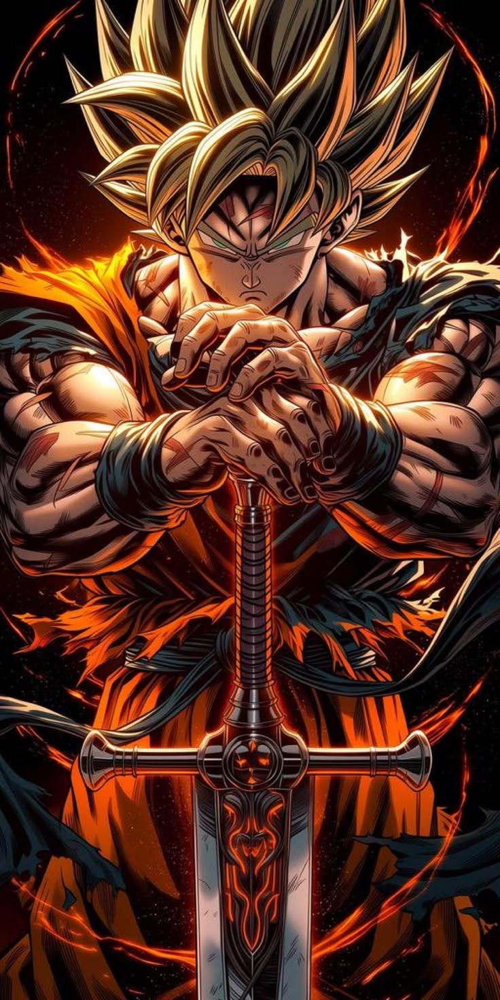
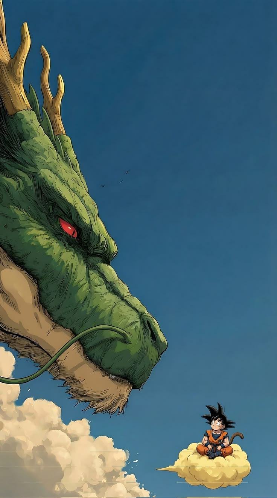
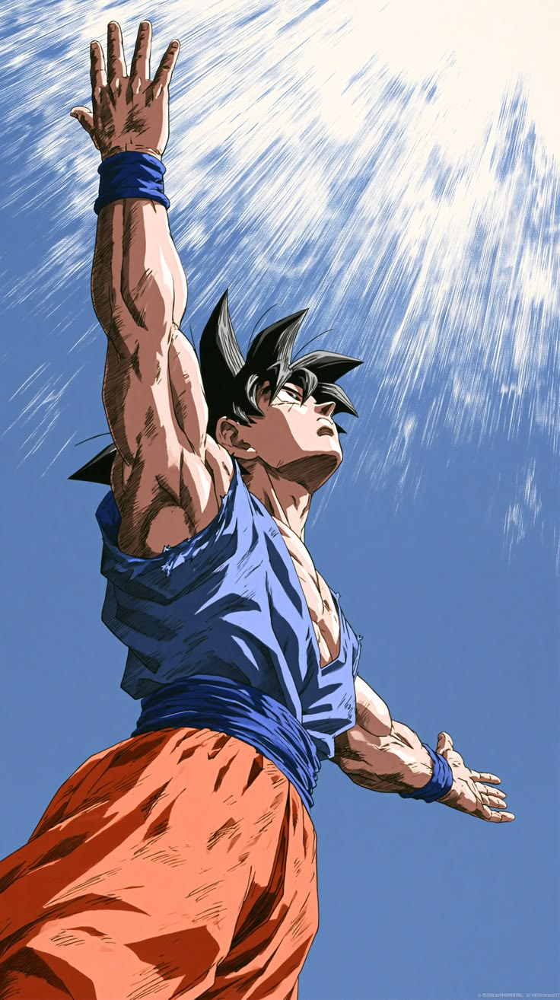

Colección 001—008
Cuaderno de energía
Pasa sobre una lámina para verla acercarse.







La fuerza cambia de forma. La voluntad sigue ahí.
Dossier 02 / Archivo
Una secuencia de retratos y paisajes de combate: cada lámina captura una expresión diferente de la energía Saiyajin.
Colección 001—008
Pasa sobre una lámina para verla acercarse.



La fuerza cambia de forma. La voluntad sigue ahí.